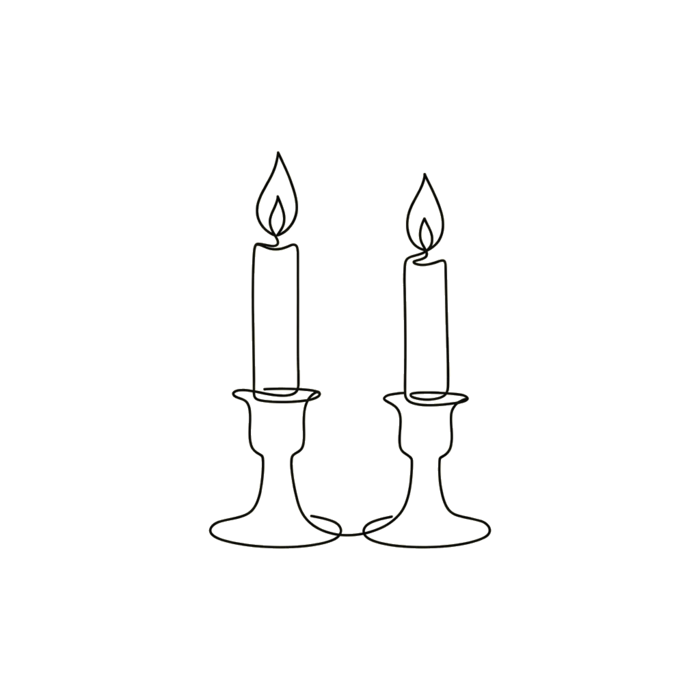
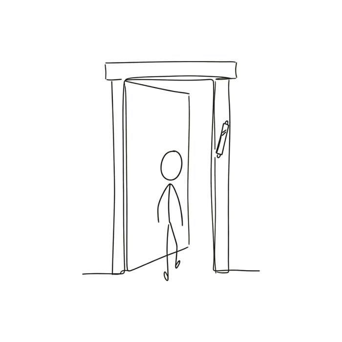
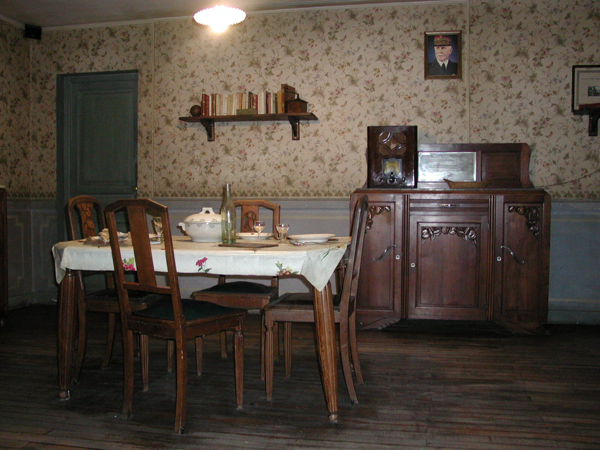

City walk
City walkJewish Lyon
Rue Juiverie, then inside the Grande Synagogue, closed to visitors outside the Heritage Days, then rue Sainte-Catherine
Private 290 € | Group 1 to 4 people
Ask on WhatsApp Full details mishpacha tours
mishpacha tours

The Grande Synagogue on quai Tilsitt is closed to visitors outside the Heritage Days. With us, you go inside, with a guide who is Jewish, observant and part of Lyon's community.
Your group only, in English, French or Spanish. Prices for the whole group.
City walkRue Juiverie, then inside the Grande Synagogue, closed to visitors outside the Heritage Days, then rue Sainte-Catherine
Private 290 € | Group 1 to 4 people
Ask on WhatsApp Full details Memory
MemoryThe Resistance and deportation museum, in the former Gestapo headquarters
Private 290 € | Group 1 to 4 people
Ask on WhatsApp Full details Memory
MemoryThe prison memorial, then the second synagogue we enter, next door
Private 290 € | Group 1 to 4 people
Ask on WhatsApp Full details City walk
City walkBetween your flight and the Alps, bags in the van, the Grande Synagogue included
Private 390 € | Group 1 to 5 people
Ask on WhatsApp Full details Day trip
Day tripThe Maison d'Izieu, memorial to the children, with an Izieu mediator
From 990 € | quote on demand
Ask for a quote Full details
Rue Juiverie, the Grande Synagogue, rue Sainte-Catherine

The CHRD, Montluc and Neveh Shalom

Three hours between flight and resort

A full day, one hour from Lyon
We walk in
Vieux LyonRue JuiverieQuai TilsittRue Sainte-CatherineMontlucNeveh ShalomIzieu

Jewish, observant, licensed by the French state. Nothing about kashrut or Shabbat has to be explained first.

Closed to visitors outside the Heritage Days. No other tour takes you in. We also enter Neveh Shalom, the second working synagogue of Lyon.

No tours on Saturday or on Jewish holidays. No stop involves non-kosher food.

Your group only, never joined to strangers. One price for the group, from one to ten people.

Routes and meeting points chosen in advance. A professional security escort on request, priced separately.

Message us on WhatsApp with your dates, the number of people and your language. Free cancellation up to 24 hours before.

Expertly led,
personally delivered
Your guide“ I am Jewish, observant, and a member of the Lyon Jewish community. I hold the guide-conférencier card, the French state licence for guiding inside monuments and museums. I welcome you the way you welcome family: the questions you would hesitate to ask elsewhere are ordinary here. ”
Your guideLyon, France · Tours in English, French or Spanish
From message to meeting point, booking is simple and in writing.
Step 1Message us on WhatsAppYour dates, the number of people and your language. We answer the same day, never on Shabbat.
Date, start time, meeting point in Vieux Lyon and the price for your group, in one message.
Step 3Meet your guideShe is waiting at the agreed spot. Free cancellation up to 24 hours before the start time.
Real photos of the walk, not stock images.





38 certified places, on the map
Prayer times, candle lighting this week

Four centres, a Shabbat table on request
La Mouche, since 1795
Nine towns, three ski resorts
The only tour that takes you in
Jewish Lyon tour. Museum and memorial entries billed separately. Free cancellation up to 24 hours before.
No. The Grande Synagogue on quai Tilsitt is closed to visitors outside the Heritage Days. Mishpacha Tours is the only tour that takes you inside, subject to opening hours and security clearance on the day. We also enter Neveh Shalom.
English, French or Spanish. We do not run tours in Hebrew: Hebrew-speaking guests are guided in English. Tell us your language when you book and we confirm it in writing.
Yes. Your guide is Jewish and observant and lives by the same rules you do. No stop involves non-kosher food. If you want a meal during or after the tour, we tell you where the certified kosher restaurants of Lyon and Villeurbanne are.
No. We are shomer shabbat: no tours on Saturday, none on Jewish holidays. Friday tours end early enough to be home well before Shabbat comes in, which in Lyon can be as early as 4.30pm in December.
We work in private groups only. Routes and meeting points are chosen in advance and kept discreet. A professional security escort is available on request on any tour, priced separately.
The guiding for your whole group. Museum and memorial entries, and the van and driver for Izieu, are billed separately and we tell you the amounts before you book.